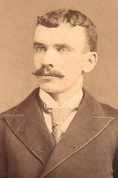
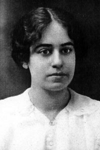
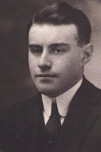

|
|
|
| ||||||||||||||||||||||||||||||||||||||||||||||||||||||
|
|
THE ANCESTOR FROM THE VERY BEGINNING Of all our ancestral lines known to date, Robert Caron is the first to arrive in New France, on June 4, 1634 (he was in the first group brought over by Robert Giffard). Mathieu Choret, also a settler in Beauport, near Robert Giffard's seigneury, would arrive only ten years later. |
|
|
Robert Caron, probably born on July 22, 1613, in Rouen, France, sails for New France on one of the four ships of the Compagnie Cheffault-Rozee (a company founded for 5 years, based in Rouen, and charged with carrying immigrants to the St. Lawrence valley). Robert Caron thus arrives with Robert Giffard, seigneur of Beauport, and all the first settlers who came with him: Jean Côté, Jean Bourbon, Noël Langlois, Zacharie Cloutier. Each
immigrant is hired for 3 years at 75 livres a year (with room and board). After that he is free to return to France or to settle in the country. |
||
|
|
||
On October 25, 1637, Robert marries Marie Crevet (aged 16), who had arrived in the country in July 1637. She is the daughter of Pierre Crevet and the late Marie Lemercier, of Bénouville, diocese of Bayeux, in Normandy. The wedding takes place in the chapel of Notre-Dame-de-la-Recouvrance. It is blessed by the Jesuit Charles Lallemant, who serves as parish priest in Québec. Jasmin Bourguignon, a friend, Noël Langlois, a settler from the very beginning, and Robert Giffard, surgeon and seigneur of Beauport, attend the wedding as witnesses. Seven children will be born of this union.
In 1639 Marie Caron is born, and in 1641 Jean-Baptiste. Note that in 1641 the population of New France is 300 inhabitants, whereas New England has 50,000. In 1642 Robert, fearing the Iroquois, not without reason, sells his land to his neighbour Guillaume Couillard for 150 livres. He settles in Québec on the côteau Sainte-Geneviève (Sainte-Geneviève hillside), later to be called « le Belvédère »; he clears land to make an opening and keep a better eye on the movements of the Iroquois. Timber is his main source of income. Several settlers of Norman origin had settled in this area, which is located where the present-day Collège des Jésuites stands, at the corner of René-Lévesque and Joffre. From the spring of 1643, he devotes himself to clearing his land on the heights of Québec. Three years later the Compagnie des Cent-Associès (Company of One Hundred Associates) gives him the official title to his grant of 40 arpents of land, between the properties of Louis Sédillot and Claude Larchevêque. Governor Louis D'ailleboust then gives him 20 more arpents. On December 6, 1652, Governor Jean de Lauzon confirms both titles, apparently to encourage him to stay there In
1647 Robert Jr. is born, in 1649 Catherine, in 1652
Joseph and in 1654 Pierre. For a reason known only to himself, in 1654 Robert Caron sells all his properties in Québec. His land on the côteau Sainte-Geneviève is sold to Charles D'Ailleboust, the governor's nephew, for the considerable sum of 1700 livres. A few months earlier, Robert had bought from Julien Fortin dit Bellefontaine*, for 500 livres, a farm five arpents wide by one league deep on the côte de Beaupré, at Sainte-Anne-du-Petit-Cap, about a mile east of the present-day basilica of Sainte-Anne. In 1656 Aymée Caron is born. *
Julien Fortin dit Bellefontaine is a direct ancestor of
Marie-Hélène. But he is also our ancestor through the Caron line, since two
generations of Carons married Fortins. So Julien, Olivier and
Antoine Charette descend from Julien Fortin dit
Bellefontaine through two lines, one maternal, the other paternal. |
||
|
|
||
On July 8, 1656, Robert Caron dies at the age of 44 at the Hôtel-Dieu. An accident or an illness? His
death plunges Marie
Crevet into poverty, her children being too young to
support her. She splits up her
family, sending the two oldest boys to friends in Québec, and
she settles in Château-Richer. On June 4, 1660, Marie Caron (the eldest daughter), who had married Jean Picard on July 28, 1656, is abducted by Hurons allied with the Iroquois, together with her daughter Louise (born September 29, 1659) and three settlers' children she was looking after. Her husband was sowing the fields with neighbours (people banded together to defend themselves better in case of attack). Alerted, Governor d'Argenson sends a party of French and Algonquins to search for the young woman and the children. They flush out the kidnappers at Pointe de Lévy two days later. Marie, lying in the canoe, hears friendly voices, raises her head and is struck by a bullet that also kills the child she is holding in her arms. She is taken to the hospital, where she dies two days later. Her little daughter is raised by her Picard grandparents. On
November 16, 1661, Jean-Baptiste Caron (the eldest son) marries Marguerite
Gagnon. This allows Marie Crevet to return to her land at Sainte-Anne-de-Beaupré with her family.
She houses and feeds
Jean-Baptiste and his new wife, and in return he works the land
and develops it. In 1663 the population grows to 2,500 inhabitants ( and to 80,000 in New England). Ten
years after Robert Caron's death, on
July 27, 1666, Marie Crevet remarries, to Noël Langlois, in
Château-Richer. To avoid quarrels between the Langlois and Caron
heirs, Marie and Noël sign a marriage contract under
"séparation de biens" (separate property). Marie and Noël have
known each other for a long time. He was a pilot, born in France in 1603,
who came to Canada in 1634 at the same time as Robert Caron. Noël had
been a witness at Marie and Robert Caron's wedding. He himself had
first married Françoise Garnier, with whom he had ten children. In 1672 the population is 6,700 inhabitants (and 120,000 in New England). On
July 15, 1684, Noël Langlois (stepfather of the Caron children) dies in
Beauport at the age of 80. At that time he is the oldest
inhabitant in the country. In
1695 Marie Crevet dies in Baie-St-Paul, where she lives with her daughter
Catherine. Catherine, the widow of Jacques Dodier, had married
secondly Pierre Dupré, who on December 30, 1682, was granted the
seigneury of Le Gouffre. He is the first settler of Baie St-Paul. |
||
|
SECOND GENERATION, JOSEPH CARON |
||
|
Joseph Caron, born in 1652 in Québec, settles in the Bas du Fleuve (the lower St. Lawrence). This is because in the autumn of 1672 his younger sister, Aymée, marries one of their stepfather's sons, Noel Langlois fils dit Traversy. Frontenac grants him the Seigneury of Port-Joly. He will sell it in 1686, having been unable to meet the requirements expected of a seigneur, but in the meantime several of his Caron brothers-in-law, including our ancestor Joseph, follow their sister and her husband and move to this new region to be developed, the Bas du Fleuve. In 1678 Joseph Caron begins clearing land at Port-Joly. He lives with his brother Pierre at Cap St-Ignace. He is an excellent carpenter and builds several houses and barns for the settlers. In
March 1683 Joseph Caron builds the first church of Cap
St-Ignace. It is made of wood and measures 40 feet long by 25 feet wide. In 1711 Joseph Caron dies at Cap St-Ignace. He leaves 5 children. source:
Les Caron d'Amérique. |
||
|
|
||
|
CARON |
||
|
Robert Caron |
marriage October 25, 1637 |
Marie Crevet |
|
Joseph Caron |
October 27, 1684 |
Elisabeth Bernier
|
| Joseph Caron | July 1, 1711 | Marie-Anne Fortin |
| Joseph Caron | April 3, 1742 | Josephte St-Pierre |
| Pierre Caron | August 12, 1783 | Madeleine Fortin |
| Joseph Caron | November 17, 1812 | Geneviève Chouinard |
| Joseph Caron | November 6, 1866 | Geneviève Anctil St-Jean |
| Arthur Caron
 |
October 12, 1891 | Alphonsine Gagnon
|
| Marie-Anna Caron
 |
January 16, 1917 | Rosario Charette
 |
| Jacqueline
Consigny
|
June 29, 1946 | Gérard
Charette
|

|
Marie-Anna,
her childhood Her
husband Rosario Her family
life Site created on August 27, 2002, for 800 x
600. ©Nicole Charette |